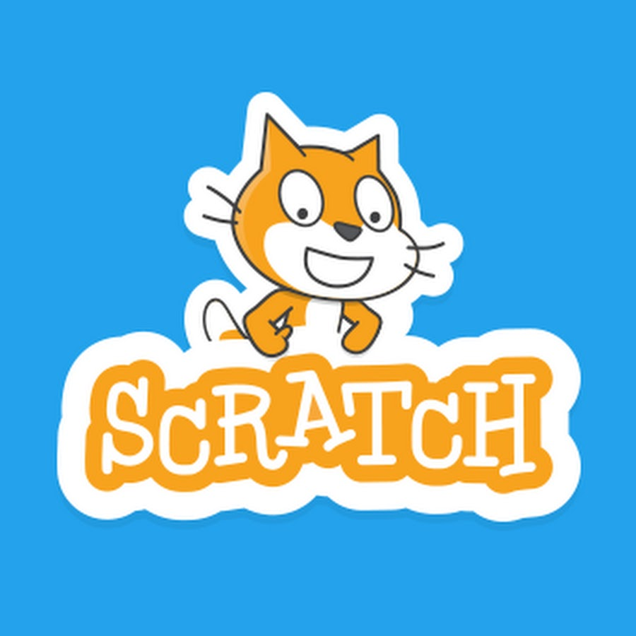

- You should use HTML and CSS!
- « Back


- These are the most commonly used languages for front-end web development and they are very well documented online
- Click here to find out more about HTML
- Click here to find out more about CSS
- You should use JavaScript!
- « Back

- JavaScript - not to be confused with Java - is a scripting language that is great for server-side scripting on webpages. There are plenty resources online to help you get started with JavaScript, and there are some useful libraries and frameworks, for example JQuery and AJAX.
- Click here to find out more
- You should use PHP or Python!
- « Back


- Both PHP and Python are fantastic languages for server side scripting.
- Click here to find out more about Python
- Click here to find out more about PHP
- You should use MongoDB!
- « Back

- An extremely popular non-relational, NoSQL and document store system. MongoDB is a more modern and scalable approach to database management.
- Click here to find out more
- You should use MySQL!
- « Back

- The most common and widely used relational database management system.
- Click here to find out more
- You should use CakePHP or Flask!
- « Back

- These frameworks are based around the most common back-end scripting languages - PHP and Python. Once you get started it is fairly easy to build dynamic websites very quickly!
- Click here to find out more about CakePHP
- Click here to find out more about Flask
- You should use C#!
- « Back

- C# is Microsoft's language and it is ideal for working with the Windows operating system.
- Click here to find out more
- You should use Swift!
- « Back

- Swift is Apple's (fairly) new programming language, designed for building MacOS and iOS software.
- Click here to find out more
- You should use Java!
- « Back

- Java Virtual Machine (JVM) gives the Java language a huge amount of flexibility and portability when moving between different machines and operatimg systems. This makes it ideal for cross-platform development.
- Click here to find out more
- You should use Java!
- « Back
- Java is widely used and has plenty libraries to aid with your development.
- Click here to find out more
- You should use C#!
- « Back
- C# is Microsoft's language, which makes it ideal for interacting with Microsoft's Windows Phone operating system.
- Click here to find out more
- You should use Swift!
- « Back
- Swift is Apple's (fairly) new programming language, designed for building MacOS and iOS software.
- Click here to find out more
- You should use Java!
- « Back
- Java is the go-to language for creating Android apps at the moment. It's easy to get started on Android development with Java by using Eclipse or Android Studio IDEs (Integrated Development Environment).
- Click here to find out more
- You should use SML New Jersey!
- « Back
- If you like functional programming, or if you are just getting started, SML is a very interesting and useful language to learn.
- Click here to find out more
- You should use Prolog!
- « Back

- Prolog is a useful language for logical programming. It can be applied to lots of interesting areas including AI (Artificial Intelligence).
- Click here to find out more
- You should use MatLab!
- « Back

- MatLab provides great functionality for matrix manipulation. Also, you don't have to be an expert programmer to use it.
- Click here to find out more
- You should use Python!
- « Back
- Python is commonly used for data science and has a huge amount of libraries and resources available. If you've programmed before, or even if you're new to programming, you should be able to pick up the language fairly quickly.
- Click here to find out more
- You should use R!
- « Back

- R was developed specifically for data science. It is a great language to use if you don't mind the steep learning curve that comes with it!
- Click here to find out more
- You should use MatLab!
- « Back
- MatLab is a development environment, rather than a language. This means you need no prior programming skills to use it, and it's great for data manipulation.
- Click here to find out more
- You should use Thunkable!
- « Back
- Thunkable is an online tool for creating Android and iOS apps quickly and easily using block-programming. You can even demo the apps on your smartphone.
- Click here to find out more
- You should use Scratch!
- « Back

- Scratch is a block-programming environment where you can have a lot of fun moving an image (called a 'sprite') around. You can have fun with this while learning some of the fundamentals of programming.
- Click here to find out more
- You should use Python!
- « Back
- Python has simple syntax, and you can download a Python terminal where you can run small commands and try-out small programs.
- Click here to find out more
- You should use C!
- « Back

- Although there are lots of languages you could use for this, C is recommended here as it is widely used in this area and it is designed for low-level or system-level programming. If you know what you're doing, you can make your compiler very efficient in C!
- Click here to find out more
- You should use C and Assembly!
- « Back

- C is a great language for building a bridge between your hardware and software. It has low-level language features like direct memory manipulation but also high-level capability that could be used to run a user interface. However, Assembly language gives you the much needed efficiency and accuracy at the lowest levels of programming. You will need to use either MIPS or ARM Assembly depending on the hardware.
- Click here to find out more about C
- Click here to find out more about ARM Assembly
- Click here to find out more about MIPS Assembly
- You should use Assembly Language!
- « Back

- Typically, embedded systems are a small part of a larger system. They are usually expected to carry out operations quickly and can't take up a lot of memory. This is why Assembly language is suited. There is very little abstraction there to slow it down. Remember, you need to use the language that corresponds to the hardware you are running it on at this level - ARM or MIPS are the most common options.
- Click here to find out more about ARM Assembly
- Click here to find out more about MIPS Assembly
- Q3. What type of database system would you like to use?
- « Back
- Non-Relational
- Relational
- Q2. What would you like to do?
- « Back
- Block Programming - Create a mobile app
- Block Programming - Create small animations
- Simple coding exercises
- Q2. What Operating System would you like to build desktop apps for?
- « Back
- Windows
- Mac OS
- Linux
- Cross Platform
- Q2. What area of maths?
- « Back
- Function Manipulation
- Logic
- Matrix Manipulation
- Q2. What kind of web development would you like to do?
- « Back
- Build a static website
- Build a dynamic website with a database
- Client-side scripting
- Server-side scripting
- Build a dynamic website quickly with a framework
- Q2. Have you done much programming before?
- « Back
- Not at all
- Yes, a bit
- Yes, a lot
- Q1: What type of programming would you like to do?
- Desktop Applications
- Mobile Apps
- Mathematics
- Web Development
- Data Science
- Build a Compiler
- Build an OS
- Embedded Systems
- Something easy, and fun! (For beginners)